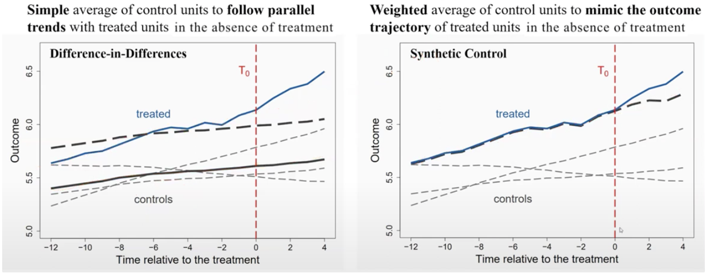
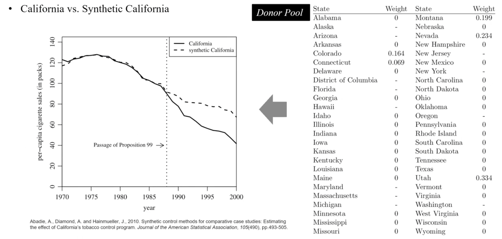
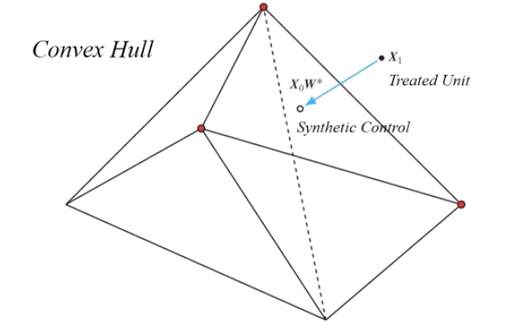
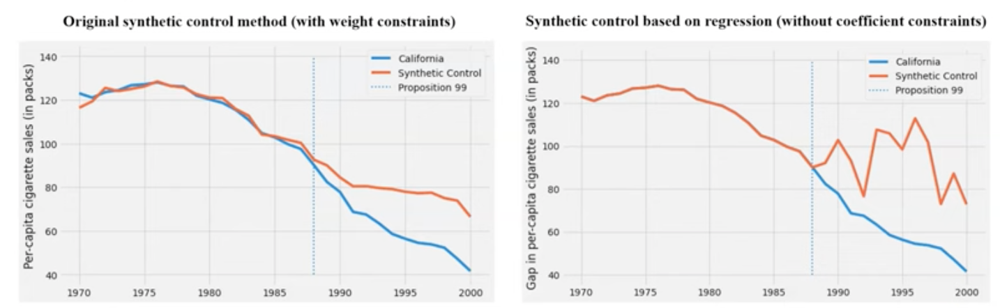
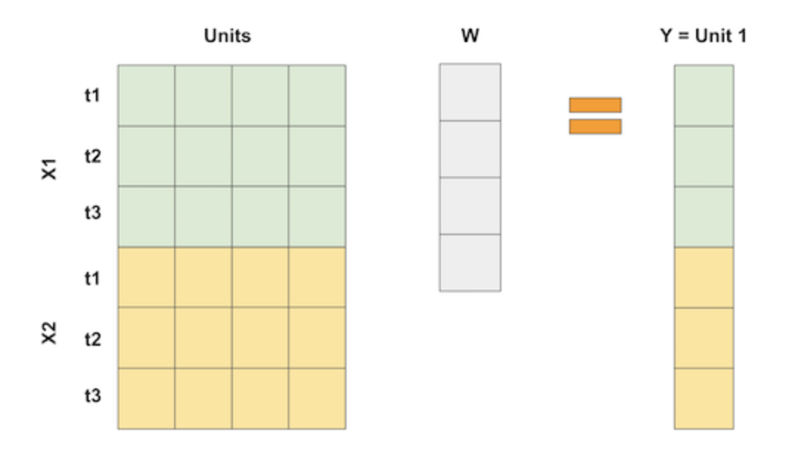
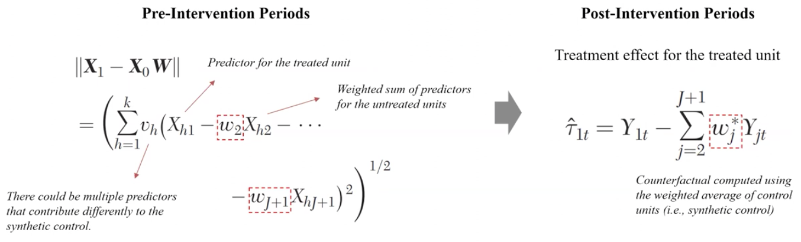
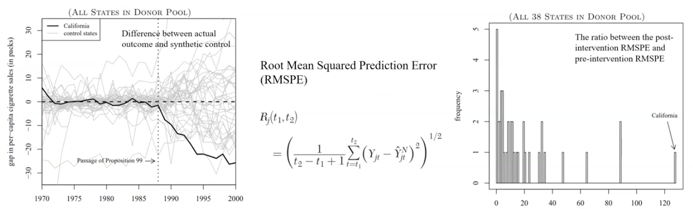
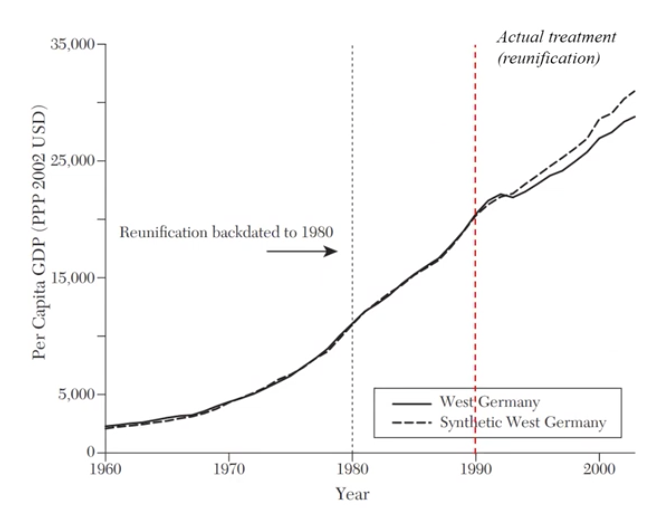

Chapter 9. Synthetic Control
causal inference
Synthetic Control method(통제집단합성법)에 대해 알아보기
Synthetic Control method(통제집단합성법)
counterfactual을 모방할 수 있는 가상의 통제 집단을 구성하는 것 (Predicted counterfactual) → control units을 잘 조합해서 (synthetic) treated unit의 반사실을 흉내내자
DID와의 차이
- 처치 이전 시점의 parallel trend assumption 필요 없음

- did에서 parallel trend를 만족하지 않는 경우 보통은 매칭을 활용 → 하지만 충분히 충족되지 않을 경우 synthetic control을 활용 할 수있음
캘리포니아의 담배 규제 예시
- 캘리포니아에서 88년 발의안 99호로 담배세 및 건강 보호법을 통과시켜, 소비세를 부과, 담배 판매에 대한 추가 제한 적용 → 캘리포니아 담배 규제(treatment) → 담배 판매량(outcome)에 영향을 미치는가?
- 캘리포니아와 비교 가능한 평행추세를 만족하는 주를 찾기 쉽지않음
- 캘리포니아 외의 다른 주를 활용하여 캘리포니아 synthetic 캘리포니아를 생성
- donor pool : 캘리포니아 이외의 다른 주

Netflix예시
- 2016 넷플릭스 서비스 확장(130개국) 하지만 인도네시아에서 불발 됨 → 넷플릭스 도입(Treatment) → 불펌에 영향을 미치는가?
- doner pool : 인도네시아 근처의 아시아 국가
- 2016 넷플릭스 서비스 확장(130개국) 하지만 인도네시아에서 불발 됨 → 넷플릭스 도입(Treatment) → 불펌에 영향을 미치는가?
Synthetic Control의 가정
ex) did 에서는 평행추세
- treatment가 없을때의 counterfactual을 synthetic control을 통해 모방이 가능해야함
- (처치 전 기간에서) 처치그룹과 가상의 통제그룹 사이의 차이가 적어지는 weight를 구해야함 → 최적화 함수를 푸는 문제
이때, 통제 그룹에 가중치를 활용하여 가상의 통제집단을 구하기 때문에 Synthetic control이 통제그룹의 Convex Hull 내에 존재해야함

(Convex Hull이란 N 개의 정점 전체 혹은 일부를 사용해 만들 수 있는 다각형으로, 정점 모두를 내부에 포함하면서 최소한의 정점을 사용하여 만드는 다각형) (Convex Hull이란 N 개의 정점 전체 혹은 일부를 사용해 만들 수 있는 다각형으로, 정점 모두를 내부에 포함하면서 최소한의 정점을 사용하여 만드는 다각형)
weight 제약조건 (회귀 모델에 2가지 제약조건을 부과)
- weight는 non-negative이며 그 합이 1이다 → convex hull 내부로 제한(외삽하지 않기 때문에 오버피팅의 가능성 줄임) → convex hull을 벗어나는 경우, 구할수 있는 weight이 무수히 많아지지만 특정 조건에서만 만족하는(Train test에서만 만족하는) 값이 구해질 수도 있다 = 오버피팅 가능성 높아짐

만약 처치 집단의 값이 통제집단의 값에 비해 너무 클 경우 Convex Hull을 벗어나게 될 수 있음 (synthetic control으로 처치 집단을 모방 할 수 없음) → outcome을 normalize를 하여 synthetic control을 구하는 것이 일반적 ex) 캘리포니아(extream value) → 인구당 담배 판매량
- (처치 전 기간에서) 처치그룹과 가상의 통제그룹 사이의 차이가 적어지는 weight를 구해야함 → 최적화 함수를 푸는 문제
- 다른 교란 요인은 없어야함
- 서로 간섭이 없어야 함(SUTVA : Stable unit treatment value assumption)
- 가중치가 분석 기간 내에 안정적으로 적용 가능해야함
- 처치 이후도 동일한 가중치를 제공하기 때문에 가중치 자체가 변화할만한 구조적인 변화가 있으면 안됨
Synthetic Control 구성하기
- 처치 전 기간의 처치집단과 가중치가 적용된 통제집단의 차이가 가장 작아지는 값을 구함
- 해당 가중치를 처치 이후에도 동일하게 적용하여 인과 효과를 추정


- covariate 고려 해야할까?
- covariate 보다 pre-treatment outcome이 훨씬 중요하다는 연구가 나오고 있음
- bias의 범위를 줄이기 위해서 사용 (통계 추정 구간을 줄이기 위해)
- covariate사이의 차이들도 최소화한 값을 찾는 것이 좋음
- 처치 전 기간이 짧은 경우에, bias를 더 줄이는 효과가 있음 (pre-treatment 의 기간이 길어질수록 covariate의 영향이 적어짐)
- 도너 풀은 어떻게 고려할까?
- 일반적으로는 도너 풀을 모두 사용하지만 모두 사용하게 되면 오버 피팅되기 쉬움
- 유의미하게 의미가 있는 도너만 선정해서 사용하는게 좋음
Synthetic Control을 구성할때 주의해야할 점
- Synthetic control을 구성할 때, 가장 가까운 그룹들로 구성하는 것이 정확도를 높히는 데에 도움이 됨(interpolation bias 를 줄이는데 도움이됨) ↔︎ 가까운 그룹일 수록 spillover effect가 있을 가능성이 높음
- Synthetic control의 예측력을 높히기 위해서는 충분한 처치 전 기간을 선정하는 것이 좋음 ↔︎ 기간이 길어질 수록 통제 그룹에 구조적 변화가 있을 가능성이 높을 가능성이 있음 (가중치의 문제가 생길 가능성이 높아짐)
Synthetic Control 대한 검증
- RMSPE(Root Mean Squared Predtiction Error) ratio를 활용
- 유닛들과 Synthetic Control 간의 차이를 왼쪽 그래프처럼 시각화
- 처치의 효과가 처치 그룹에만 적용 되어있다는 것을 간접적으로 보여줌 ( = RMSPE ratio가 다른 그룹에 비해 월등히 커야함)

- 도너 풀에 대한 sensitivity test
- covariate없이 synthetic control을 구성했을때와 결과 비교
- 도너 풀에서 한 unit씩 제외하며, 결과값 비교 (Leave-One-Out-Cross-Validation)
- Train-Test Split 테스트 진행
- pre-treatment 기간을 Train/Test 둘로 나누어서 예측 정확성 확인
- Backdating
- 처치 시점을 임의의 이전 기간으로 설정 → 실제로 차이가 있지 않아야 함

어디에 활용 할수 있을까? (뇌피셜)
- 리니지는 56번 특화서버가 존재 (업데이트가 제한적으로 진행) → 해당 서버의 업데이트에 대한 효과를 추정할 경우에, 타 일반 서버들을 가지고 가상의 통제 그룹을 만들어 진행 할 수 있지 않을까?